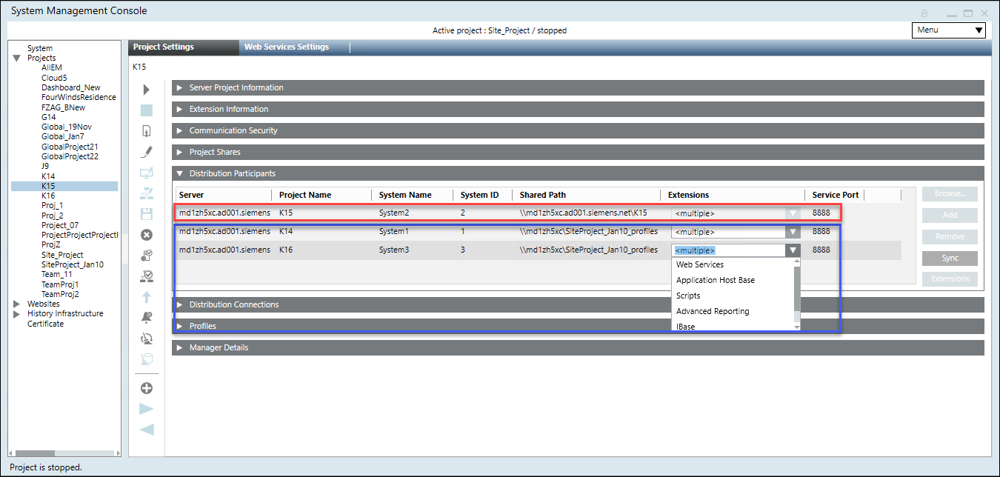
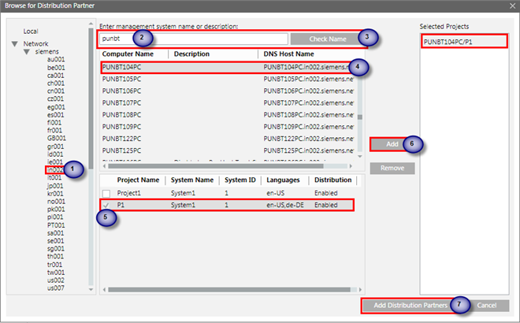
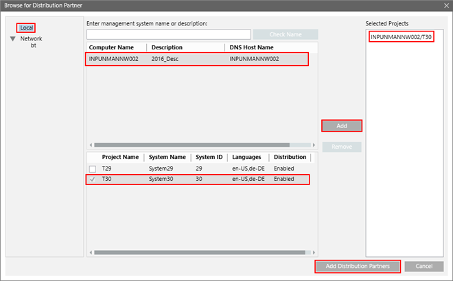
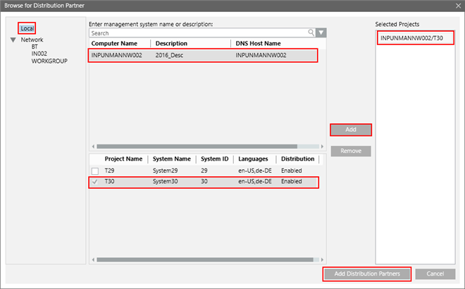

Distribution Participants Expander
The Distribution Participants expander is enabled when you select the Distribution participant check box, that in turn enables the distribution.
It provides all the required configuration parameters for setting up the projects in distribution. You can set up the projects in distribution on the same (single) server as well as on a different server. The distributed systems that you set up can be fully meshed or hierarchical.

When you enable the distribution, a default and very first entry for the Local System (Originator) is added. This entry includes the details of the current project configuration including the current Server Name, Server Project name, System Name, and so on. This is a read only entry. You can neither edit the details of Local System entry nor delete it.
Using the Distribution Participants expander you can configure the distribution participants (projects) available on the same Server or from other Server. You can do this in two ways:
Automatic Mode
When you click the Browse button in the Distribution Participant expander for adding the distribution partner entry, you are working in automatic mode. This is because, once you select the project on the selected Server from the domain/workgroup, all the configuration details of the selected project including the extensions are automatically added as a distribution partner project’s entry in the Distribution Participants expander.
Manual Mode
When you click the Add button in the Distribution Participants expander for adding the distribution partner’s entry, you are working in manual mode. In manual mode, you need to provide all the configuration details of the distribution partner project. You can add the extensions for the distribution partner project using Extensions.

NOTE:
While working in distribution environment in manual or automatic mode, make sure that the distribution partner project’s details including Server name, project name, system name, system ID, the shared path, and the extensions configured in the selected project are valid. Otherwise, the distribution does not work.
For example, if the extensions are incorrectly configured when working in manual mode, the corresponding profiles will not be present on the originator (Local) system; therefore, you cannot to load the corresponding application for the profile.
The Distribution Participants expander comprises of following:
Distribution Participants Expander | |
Item | Description |
Server | Allows you to type in the name of the Server computer or IP address of the distribution participant when you click Add and work in the manual mode. |
Project Name | In the manual mode, type in the name of the project on the selected Server that you want to set up in distribution. |
System Name | In manual mode, type in the system name configured in the selected project on the selected Server in manual mode. |
System ID | Type in the system ID configured in the selected project on the selected Server in manual mode. |
Shared Path | Type in the path of the shared Project folder on the selected Server in Manual mode. |
Extensions button and the Extensions column | The Extensions button is enabled only when a new distribution partner project’s entry is added to the distribution participants list or when you select an existing distribution partner’s entry. |
Browse | Use the Browse button to work in automatic mode. |
Add | When clicked, adds a blank row. You can manually enter the details of the distribution participant project that you want to set up in distribution. |
Remove | This button is enabled only when a distribution participant’s entry (other than the Local System entry) is added to the distribution participant’s list either using manual mode or automatic mode. |
Sync | Click Sync to harmonize the distribution configuration details of all the distribution partner projects listed in the Distribution Participants and Distribution Connections expanders. Sync also allows you apply the Originator project’s distribution details to all the distribution partners. |
Service Port | (Default value is 8888) In the Manual mode, provide the service port number configured using systems in SMC. Note that the service port for all the projects on the Local System is same. |
Browse For Distribution Partner Dialog Box
This dialog box allows you to select a Server computer from the accessible networks, in the domain or in the workgroup for configuring the distribution when you click the Browse button in the Distribution Participants expander. This expander becomes available when you select the Distribution participant check box available in the Server Information expander.



The Browse for Distribution Partner dialog box consists in the following elements:
Browse for Distribution Partner Dialog Box — Domain | |
Name | Description |
Local | When you select the Local node, current machine name and its projects are displayed. |
Check Name (applicable only servers in Domain) | Type the Server computer name into the Enter management system name or description field and click Check Name. |
Get Projects | Available only when the Service port of the selected Server is other than the default 8888 or if the WCF service for the selected Server is stopped/unreachable, a message displays. |
Filtered Server Computers’ List | List view that displays the list of all the Server computers matching the search criteria for the selected domain. |
Available Projects’ List | Select the check box adjacent to the project that you want to add as a distribution participant. You can select multiple projects. |
Add | This button is enabled once you select one or more project as distribution participant. |
Remove | This button is enabled only when the projects are added to the Selected Projects list. |
Add Distribution Partners | This button gets enabled when you have at least one project added to the Selected Projects column. |